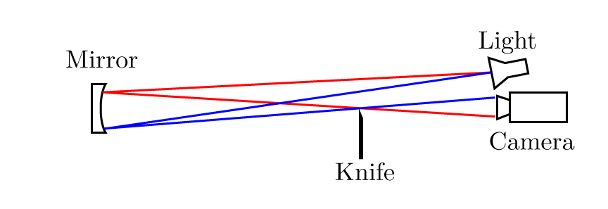
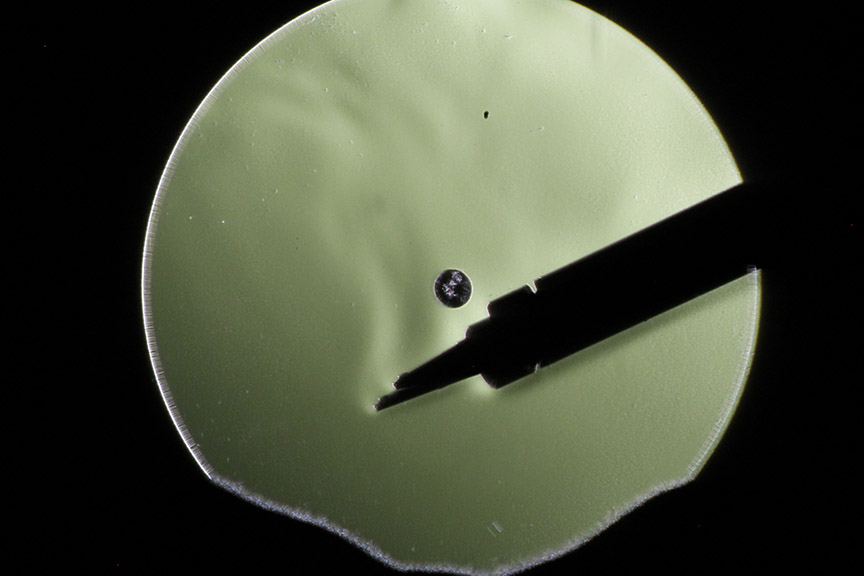
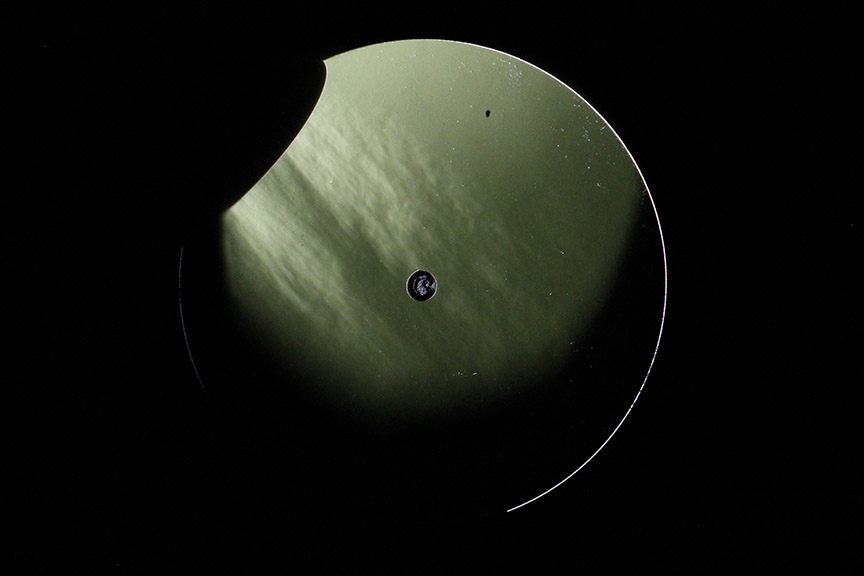
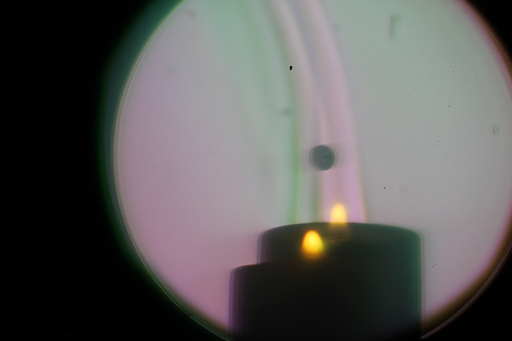

Schlieren photography is a technique by which the flow of fluids with varying densities can be photographed.
Schlieren-style imaging techniques had been in practice long before the term was coined, but between 1859 and 1864, August Toepler rediscovered the technique and named it after the German term for optical inhomogeneities in glass [1]. In practice, the term "Schlieren" refers to any optical inhomogeneities in a transparent medium. Schlieren imaging takes advantage of these to produce an image.
Fundamentally, the schlieren technique relies on small differences in the index of refraction bending light rays behind an obstruction. Perhaps the simplest setup to achieve this is what is known as the single-mirror coincident schlieren system.
As seen in Figure 1, a light source (which should approximate a point source) illuminates a spherical mirror. A knife edge is placed at the focal point of the spherical mirror and is positioned to block off half the light at the focal point. The camera is located further back on the axis of the mirror.
Qualitatively, suppose there is an inhomogeneity in the index of refraction in the area directly in front of the mirror. This will cause some light rays to bend above the knife edge and some to bend below the knife edge. This causes areas of brightness and darkness that reveal the inhomogeneities. An intriguing way of thinking of this is that a schlieren setup translates phase differences into amplitude differences.
For the single-mirror setup, I purchased a 3-inch convex telescope mirror with a focal length of 700mm. A 3D-printed stand held this mirror steady during the imaging. The knife edge and light source were held steady using laboratory ring stands. This initial setup proved to be quite easy to align and produced some impressive results immediately. Figure 2 shows the hot air coming from a soldering iron.
Intuitively, sensitivity refers to how how much contrast exists in the resulting image due to a phase difference in the test area. It is helpful to refine this definition to figure out how to optimize this. First, we define contrast. Contrast can be though of as the ratio of differential illuminance to the general background illuminance. Second, we need to understand the cause of Schlieren patterns -- the bending of light due to gradients in the index of refraction. The degree to which incoming light rays are disturbed is given by \(\varepsilon\). We can thus define sensitivity, \(S\), as the ratio of the difference in \(C\)to the difference in \(\varepsilon\). It can be shown that $$S = \frac{dC}{d\varepsilon} = \frac{f_2}{a}$$ where \(f_2\) is the focal length of the mirror and \(a\) is the length of the object that is unobstructed by the knife edge [1]. This simple equation provides the relationship between the contrast seen in the image and two important factors: the focal length, and the degree to which the knife is obstructing the beam. Intuitively, a longer focal length mirror allows more time for the refracted light rays to deviate from their original path. This is the rationale for purchasing a mirror with a long focal length of around 700mm. The role of \(a\) in the sensitivity equation presents a simple method for increasing the contrast in the image: simply obscure more of the light at the focal point. This can be seen readily in Figure 3 in which the knife edge was moved to obscure increasing amounts of light.
It is also worthwhile to appreciate the absolute sensitivity of schlieren imaging. The index of refraction of most gases is very weakly related to the change in density. For air, a density difference of two orders of magnitude would only result in a 3% change in the index of refraction [1]. Observing this directly would be almost impossible without very sensitive optics. However, the air coming out of a hair dryer is approximately \(50^\circ C\). At this temperature, air has an index of refraction of 1.0002432 whereas at room temperature, it has an index of refraction of 1.0002718. This is a difference of 0.00286%. However, the air exiting the hair dryer is clearly visible in Figure 4.
The traditional use of a knife edge, such as in the setup shown in Figure 1, causes phase differences in the incoming light rays to be converted into brightness differences. However, a different delination can also be used by placing a split, two-color filter at the position of the knife. To this end, two colors of translucent plastic were attached to a transparent plastic disk side-by-side. This turned out to be ineffective because the plastic used produced diffuse images. Instead, the disk was colored with two different colors of dry-erase marker. This provided a relatively smooth and transparent color filter that allowed enough light through to produce a visible image.
In Figure 5, there are actually two schlieren effects visible. In a theoretically perfect two-color setup, the schlieren effect seen should be between red and green. This effect is indeed visible, but there are still noticable dark areas. This is similar to the schlieren effects seen in the knife-edge experiments. This is possibly explained by the uneven coloring of the plastic disk. An extension of this project could involve using a smoother colored optical gel.
A critical part of the successful schlieren setup is the light source. The closer it approximates a point source, the sharper the results. My setup used a small, bright LED as the light source, but even so, the image at the focal point of the mirror was 3mm in diameter. This non-ideality can theoretically be solved by using a laser as a light source. Because the laser emits collimated light, passing it through a lens will cause the rays to converge to a single point before divering again as they head towards the mirror. This simulates a point light source much better than an LED can.
To achieve this, I mounted a 532nm laser pointer with a lens to a stand and aimed this at the mirror. I found that it converged to a sharp point at the focal point (<0.5mm). However, the results were too noisy to interpret. The clearest image is shown in Figure 6. A butane lighter was discharged in front of the mirror and the stream is visible as the bright white area going from the top left to the center of the image. While the image is not as great as that from the regular setup, with additional effort, this method could potentially be refined to be useful.
[1] Settles, G. S. Schlieren and Shadowgraph Techniques: Visualizing Phenomena in Transparent Media. Springer, 2013.
{kind=link}
{kind=link}
{kind=link}
{kind=link}
{kind=link}
{kind=link}
{kind=link}
{kind=link}
{kind=link}
{kind=link}
{kind=link}
{kind=link}